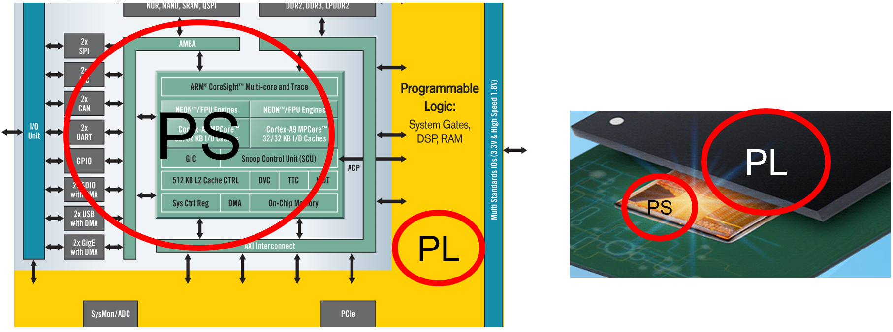
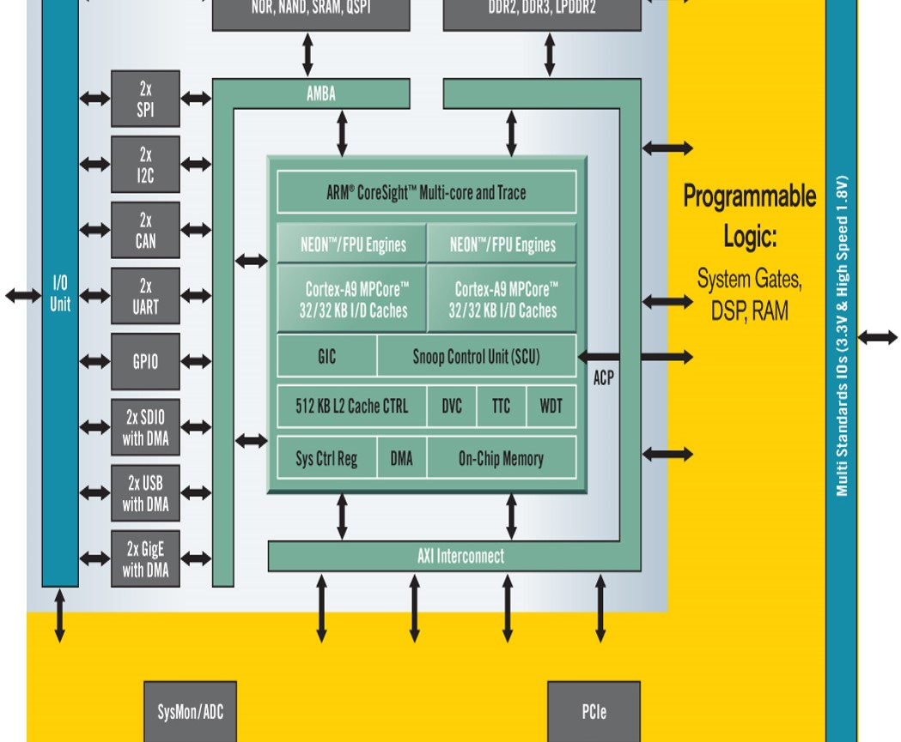
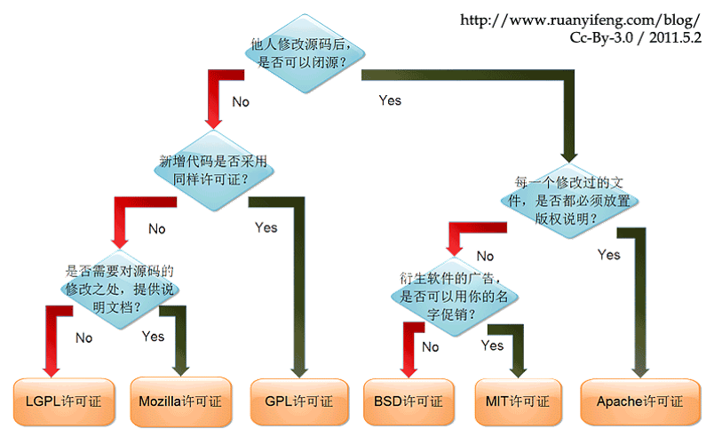

涉及的内容
- Presents the traditionally distinct fields of software and hardware design in a new unified approach（以新的统一方法呈现传统上不同的软硬件领域）
- OS for embedded computing: Linux
- “HW/SW bridges”: boot loader, device driver, IP
Course Objectives
- After this course, you will be able to design an embedded system based on Xilinx ZYNQ
- You will be able to add customized IP in ZYNQ
- You will be able to develop device driver for customized IP
- You will be able to develop boot loader for Linux
- You will be able to develop applications on ZED board
- Understand SW/HW Co-design and HLS
Course outline
- Overview and GNU Tool Chain
- Next Decade: All Programmable perspective
- Course Overview
- FPGA and ZYNQ Overview
- GNU Tool Chain
- Lab1-1 Ubuntu setup and ZED demo
- Lab1-2 hello world and GNU Tool Chain
- Lab1-3 Explore Zybo Linux
- Lab1-4 Cross Compile
- User space topic
- Process and thread
- Special files and Shell
- Busybox and Package
- Library and System Call
- Cross compile
- Lab2-1 UART read/write in two process
- Lab2-2 multi thread ZED LED flashing
- Lab2-3 Define your project
- Device driver
- Device driver overview
- Sysfs
- Interrupts
- Lab3-1 ZedBoard LED hello world
- Lab3-2 Cross compile xt.c then test it
- Lab3-3 Recompile your own kernel
- Lab3-4 Hack ZED LED device driver
- Lab3-5 Insert PWM kernel module
- Drive the Customized IP
- ZYNQ Architecture
- EDK Overview
- ARM Instruction Set Overview
- ARM Instruction Set
- Lab4-1 ZYNQ PS C Hello World
- Lab4-2 ZYNQ IP and Stand alone C
- Lab4-3 SDK Debug
- Lab4-4 Assembly and BSP library
- Bootloader
- Bootloader Overview
- U-boot and Ramfs
- Linux Device Tree
- ZYNQ Boot Sequence
- Lab5-1 Build your U-boot
- Lab5-2 Create your FSBL
- Lab5-3 Ramfs for ZRobot
- Lab5-4 Post init
- HW/SW Co-design & Project Show
- HW/SW Co-design overview
- OpenCV case study
- GNU Radio case study
- Software Defined Network
- Final Examination
- Lab6-1 Final project OpenHW.org submit
- Lab6-2 Project presentation
Day01
FPGA and ZYNQ Overview
- Embedded system: any device that includes a programmable computer but is not itself a general-purpose computer.
- 嵌入式计算的三大技术特点：
- 数字信号处理（Digital Signal Processing）
- Transforming data
- 联网能力（Packet Processing）
- Transporting data
- 不亚于桌面系统的CPU处理能力（Tera Computing）
- Analyzing data
- 数字信号处理（Digital Signal Processing）
- 双核ARM Cortex-A9 SOC + FPGA
 - 处理系统PS（Processor System）
- 可编程逻辑PL（Programmable Logic）
 From：古月居～ROS探索总结（十六）——HRMRP机器人的设计
Zynq 由处理系统（Processor System， PS）与可编程逻辑（Programmable Logic， PL）两部分组成。其中 PS 基于 ARM Cortex-A9 双核处理器构建，包含常用的外设接口，例如网络、 USB、内存控制器等。而 PL 由 Xilinx 的 7 系列 FPGA 构成，支持动 态重配置，可以使用 Verilog 语言编程使用。在HRMRP （Hybrid Real-time Mobile Robot Platform，混合实时移动机器人平台）中，PS通过操作系统控制所有功能正常有序的实现，而 PL作为协处理器一方面可以对复杂的运算并行加速处理， 另一方面可以进行 I/O 接口扩展，为多传感器和执行器设计统一的接口，提高系统硬 件配置的灵活性。
GNU Tool Chain
• Which license I should use ?

• GCC Options
• -E: preprocessor output
• -g: debug information
• -O0~-O1: optimization level.
• default is -O1
• -x language: input file’s language.
• Ex: gcc -x java test.java
• -S: output assembly
• The GNU Compiler Collection (GCC) is the most important piece of open source software in the world. Virtually all other open software is based on it at some level or another. Even other languages, such as Perl and Python, are written in C, which is compiled by the GNU compiler.

• Tool Chain
• Compiler
• Convert source code to object modules
• The Structure of Compiler

• .o: external references not yet resolved
$ nm .o
• Linker
• Advanced Topic（*Binutils）